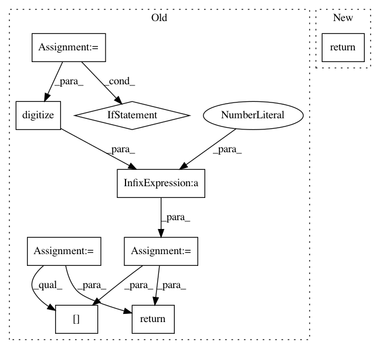

8c430e84863f1a1f7492206ea399215b75a7c4cd,lib/matplotlib/projections/polar.py,PolarAxes,get_yaxis_text1_transform,#PolarAxes#Any#,657
Before Change
thetamin, thetamax = self._realViewLim.intervalx
full = _is_full_circle_rad(thetamin, thetamax)
if full:
angle = self.get_rlabel_position()
else:
angle = np.rad2deg(thetamin)
if angle < 0:
angle += 360
angle %= 360
// NOTE: Due to a bug, previous code always used bottom left, contrary
// to its original intentions here.
valign = [["top", "bottom", "bottom", "top"],
// ["bottom", "bottom", "top", "top"]]
["bottom", "bottom", "bottom", "bottom"]]
halign = [["left", "left", "right", "right"],
// ["left", "right", "right", "left"]]
["left", "left", "left", "left"]]
ind = np.digitize([angle], np.arange(0, 361, 90))[0] - 1
return self._yaxis_text_transform, valign[full][ind], halign[full][ind]
def get_yaxis_text2_transform(self, pad):
thetamin, thetamax = self._realViewLim.intervalx
full = _is_full_circle_rad(thetamin, thetamax)
After Change
thetamin, thetamax = self._realViewLim.intervalx
full = _is_full_circle_rad(thetamin, thetamax)
if self.get_theta_direction() > 0 or full:
return self._yaxis_text_transform, "center", "left"
else:
return self._yaxis_text_transform, "center", "right"
def get_yaxis_text2_transform(self, pad):
In pattern: SUPERPATTERN
Frequency: 4
Non-data size: 9
Instances
Project Name: matplotlib/matplotlib
Commit Name: 8c430e84863f1a1f7492206ea399215b75a7c4cd
Time: 2017-09-25
Author: quantum.analyst@gmail.com
File Name: lib/matplotlib/projections/polar.py
Class Name: PolarAxes
Method Name: get_yaxis_text1_transform
Project Name: analysiscenter/batchflow
Commit Name: d381fb0787395076ecb8a3bd6984f52a16793fae
Time: 2018-03-27
Author: g.ivanov@analysiscenter.ru
File Name: dataset/batch_image.py
Class Name: ImagesBatch
Method Name: _posterize_
Project Name: matplotlib/matplotlib
Commit Name: 6889c6dbf8511382250bea9a5a36ceb0e1912f01
Time: 2017-09-25
Author: tcaswell@gmail.com
File Name: lib/matplotlib/projections/polar.py
Class Name: PolarAxes
Method Name: get_yaxis_text1_transform
Project Name: analysiscenter/batchflow
Commit Name: 49f4e83ae4323e032bdd232e466e59b4aeceb458
Time: 2018-03-28
Author: g.ivanov@analysiscenter.ru
File Name: dataset/batch_image.py
Class Name: ImagesBatch
Method Name: _posterize_